ЛАБОРАТОРНАЯ РАБОТА № 5
ОПТИМИЗАЦИЯ РАБОТЫ ОС WINDOWS XP
Цель работы — провести оптимизацию операционной системы Windows Xp. Проверить работоспособность системы после проведения ее оптимизации. Выполнить практическую часть. Сделать выводы.
Оборудование: Персональный компьютер ( Intel Core2Duo 2.0, 2.0 GB ОЗУ, HDD 160 GB), операционная система Windows XP SP3 Full. Виртуальная машина с установленной операционной системой.
Теоретическая часть
Операционная система Windows представляет собой взаимосвязанную систему из многих компонентов, т.к. она применяется во многих областях жизнедеятельности человека. Но далеко не каждый пользуется всем изобилием средств и сервисов этой системы ввиду ненадобности, а зачастую эти сервисы на свою поддержку могут забирать очень большую часть системного ресурса.
Практическая часть
Оптимизацию операционной системы начнем с корректировки системной папки windows.
1. Удаляем лишние папки
Посмотрите свойства диска на котором установлена ОС и свойства системной папки. Установите их размер и зафиксируйте в отчете.
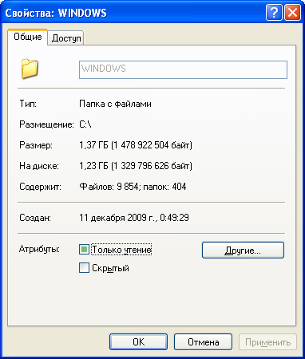
Рис. 5. 1. Свойства системной папки. Размер составляет 1.37 Гб.
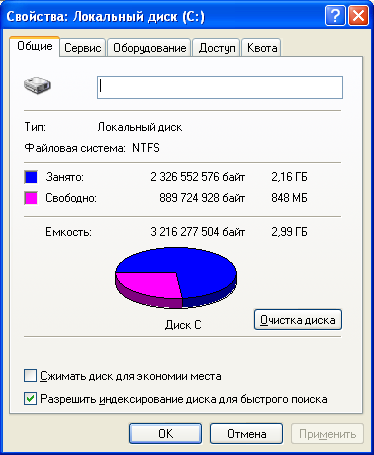
Рис. 5. 2. Свойства локального диска с ОС. Занимаемое место 2.16 Гб.
Для уменьшения размера, занимаемого Windows XP, можно удалить папку %SystemRoot%\Driver Cache\i386\. Правда, после этого, каждый раз когда вы будете устанавливать новое оборудование, Windows будет запрашивать установочный CD.
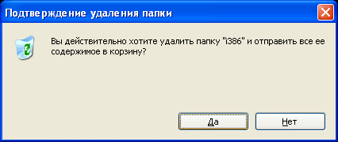
Рис. 5. 3. Удаление папки из системного каталога ОС.
Можно также отключить режим System Restore, удалив тем самым информацию из папки System Volume Information. Но данное действие проводить не рекомендую так как при отключении этого режима в системе образуется дыра которая до сих пор не залатана производителями ОС, и которой могут воспользоваться недоброжелатели.
И еще одну папку можно удалить - %SystemRoot%\system32\dllcache\. В ней хранятся защищенные системные файлы, используемые для автоматического восстановления оригиналов в случае их повреждения. По умолчанию размер этой папки - 400 Мб. Он задается в реестре параметром SFCQuota (0xFFFFFFFF), находящимся в ключе HKEY_LOCAL_MACHINE\ SOFTWARE\ Microsoft \Windows NT \CurrentVersion \Winlogon)/. С помощью команды sfc: sfc /cachesize=0 его можно сократить до нуля (или до любого другого желаемого значения).
Рис. 5. 4. Удаление папки dllcache из системного каталога.
Также изменим размер который выделяет система по умолчанию под эту папку.
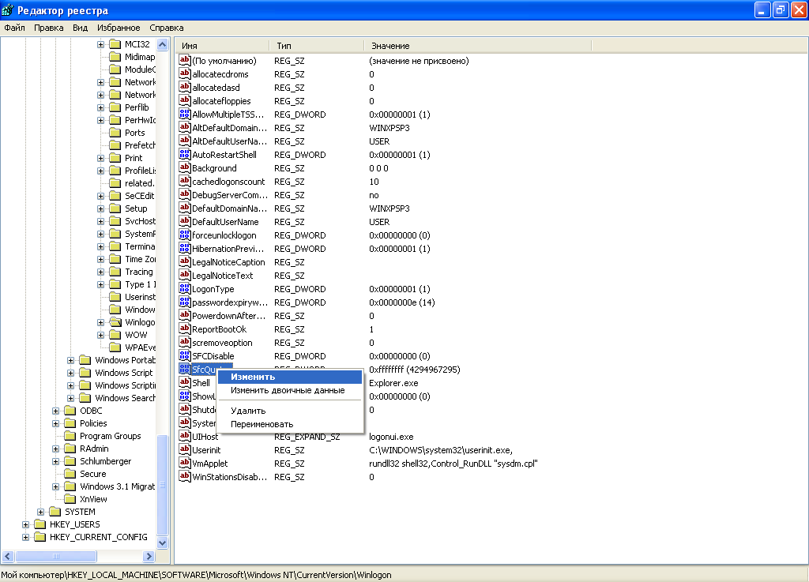
Рис. 5. 5. Это можно сделать в редакторе реестра RegEdit .
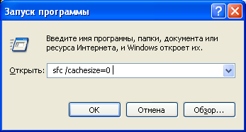
Рис. 5. 6. Или с помощью команды sfc.
Проделайте изменение размера папки и проверьте выполнение команды.
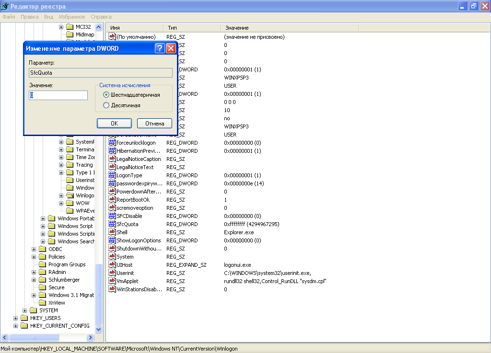
Рис. 5. 7. Измененное значение параметра в реестре фиксирующее размер папки в системном каталоге.
После выполнения удаления папок из системного каталога проверьте результат и зафиксируйте разницу.
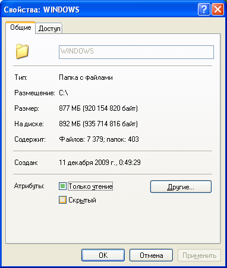
Рис. 5. 8. Размер системной папки после оптимизации.
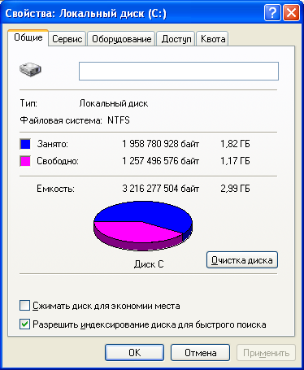
Рис. 5. 9. Занимаемое место ОС на жестком диске после оптимизации.
2. Дефрагментация
DOS и версии Windows, не входящие в семейство NT, мало заботятся об оптимизации файловой системы. Это приводит к образованию "дыр" в разных местах дискового пространства при установке и удалении программ. В результате свободные участки, вместо того чтобы образовать один сплошной блок, разбросаны по всему диску. При заполнении свободного пространства файлы тоже оказываются разбросанными по нескольким секторам, что сильно снижает производительность - при обращении к файлу приходится читать не один последовательный участок диска, а несколько, да еще расположенных произвольно.
В Windows NT используется файловая система NTFS, где приняты особые меры для сохранения целостности дискового пространства. Но и они не исключают фрагментации. Поэтому необходимо дефрагментировать жесткий диск.
Регулярность этой процедуры зависит от характера вашей деятельности на компьютере Если вы часто устанавливаете и удаляете программы или постоянно создаете, перемещаете или удаляете файлы, то рекомендуется выполнять дефрагментацию раз в неделю. Если же вы долгое время используете одни и те же приложения, не слишком часто перемещая при этом файлы, то промежуток между дефрагментациями можно увеличить до одного месяца.
Если диск дефрагментируется достаточно часто, то вы не заметите после очередной дефрагментации ощутимого прироста в производительности. Это совершенно нормально. Напротив - если прирост заметен, это значит, что дефрагментацию нужно поводить чаще.
Выполним дефрагментацию системного диска. Создадим отчет. Проанализируем полученные данные.
Вызовем утилиту для дефрагментации.
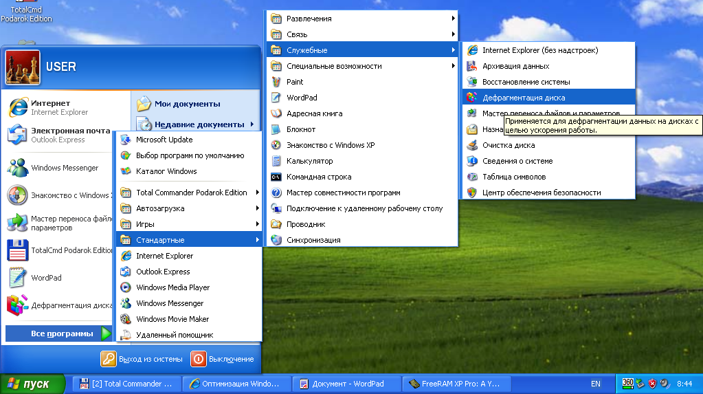
Рис. 5. 10. Открытие утилиты Дефрагментация.
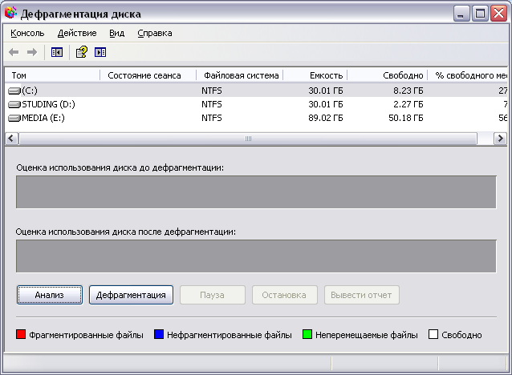
Рис. 5. 11. Рабочее окно программы.
Выберем раздел для дефрагментации и нажмем анализ. После выполнения анализа выведем отчет о состоянии раздела.
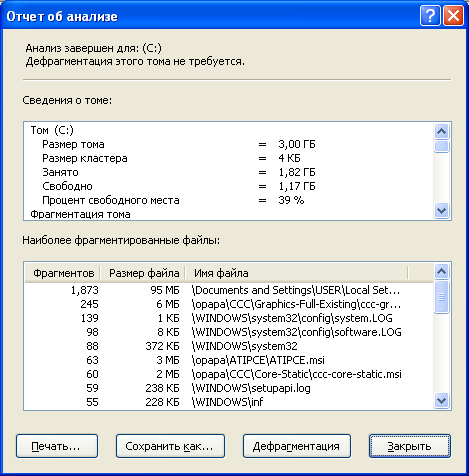
Рис. 5. 12. Окно отчета. При необходимости вы можете выполнить дефрагментацию.
3. Оптимизация с помощью ключей реестра
В реестре Windows есть несколько ключей, которые позволяют оптимизировать работу Windows с памятью.
· Найдите ключ ClearPageFileAtShutdown в ветви [HKEY_LOCAL_MACHINE \SYSTEM \CurrentControlSet \ControlSessionManager \Memory Management]. Он позволяет удалять файл подкачки при выходе из Windows (этот режим доступен также в разделе локальной безопасности). Его активация приведет к большим задержкам при перезагрузке, поэтому желательно оставить его значение равным 0.
· Ключ DisablePagingExecutive запрещает записывать в файл подкачки коды (драйверы, exe-файлы), всегда оставляя их в физической памяти. Если этой памяти больше 256 Мб, то установка значения в 1 может существенно ускорить работу системы.
· Ключ LargeSystemCache определяет работы системного кэша (см. раздел "Дополнительное ускорение").
· Ключ SecondLevelDataCache предназначен для компьютеров со старыми моделями процессоров (до Pentium II) и позволяет установить размер кэша. По умолчанию его значение равно 0, что соответствует 256 Кб.
Несколько ускорить работу может отключение неиспользуемой подсистемы POSIX. Чтобы не возиться с удалением файлов и с отключением файловой защиты Windows XP откройте [HKEY_LOCAL_MACHINE \SYSTEM \CurrentControlSet \ControlSessionManager \SubSystems] и удалите строки Optional и Posix.
Найдите все ключи с помощью утилиты regedit и зафиксируйте в отчете.
4. Дополнительная оптимизация и оптимизация с помощью специализированного софта.
Ultra DMA
Убедитесь что для всех IDE-устройств включен режим DMA. Это можно проверить в окне Device Manager > IDE ATA/ATAPI controllers > Primary/Secondary IDE Channel > Advanced Settings. Параметр Device Type позволяет Windows автоматически определять подключенные устройства. Если канал свободен, установите значение None - это немного ускорит загрузку системы. Параметр Transfer mode Windows XP обычно включается по умолчанию и позволяет Windows использовать максимальный DMA, поддерживаемый устройством либо PIO. Убедитесь, что он находится в режиме DMA if available.
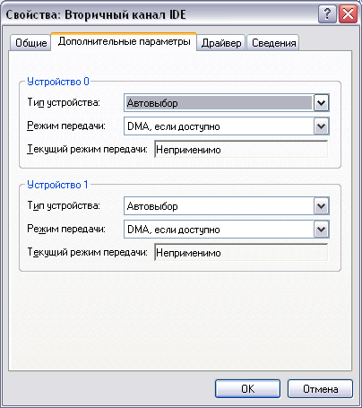
Рис. 5. 13. Окно настройди DMA.
Откройте это окно и поменяйте режимы. Результат зафиксируйте в отчете.
Дополнительное ускорение
Откройте My Computer > Properties > Advanced > Performance Settings > Advanced. Значение параметра Processor scheduling должно равняться Programs. В противном случае Windows будут распределять процессорное время равномерно между всеми программами, включая сервисы, что для игр неприемлемо. Если объем оперативной памяти составляет не менее 256 Мб, включите режим System cache в разделе Memory usage. Если же памяти меньше, система будет работать быстрее в режиме Programs. Этот параметр аналогичен ключу реестра LargeSystemCache (см ниже).
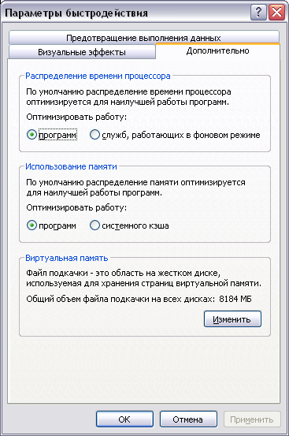
Рис. 5. 14.
Далее не выходя из этого окна нажмите кнопку изменить в разделе виртуальная память.
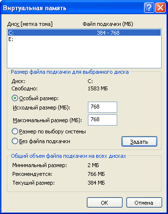
Рис. 5. 15.
Задавать файл подкачки не в коем случае не рекомендуется динамическим или по выбору системы. Он должен составлять половину оперативной памяти и должен быть задан статически. Так как на изменение размеров файла при динамическом режиме системой тратиться очень много ресурсов и понижение производительности заметно визуально.
Задайте файл подкачки необходимого размера на вашем компьютере и зафиксируйте в отчете.
Оптимизация с помощью полезного софта.
Оптимизация работы оперативной памяти ПК. Как мы знаем большинство процессов проходят через оперативную память. При работе с оперативной памятью зачастую встречается такое явление, когда программно не реализуют ее очистку после работы с некоторыми программами. Данная программа позволяет отследить такие участки. К примеру не загружая никакого софта и дополнительных программ оперативная память после запуска ПК уже будет содержать неиспользуемую информацию.
На нашем примере оперативная память загружена сразу же после загрузки Windows на 23 процента.
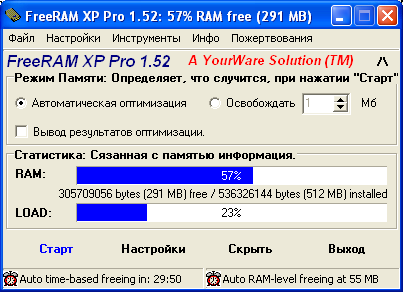
Рис. 5. 16. Окно программы FreeRAM Xp Pro.
После выполнения оптимизации очищено 3 процента оперативной памяти.
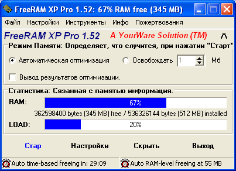
Рис. 5. 17.
Специфика данной программы в том, что мы можем ее настроить удобным для нас способом. Очистке при определенной загруженности или очистке по времени.
Оптимизация реестра посредством софта.
Так же как и в ОЗУ в реестре храниться много устаревших и неиспользуемых значений которые затрудняют поиск элементов в реестре расширяя диапазон поиска. RegSuprime Pro утилита которая сканирует реестр на наличие таких элементов и выполняет действие после поиска предложенное пользователем.
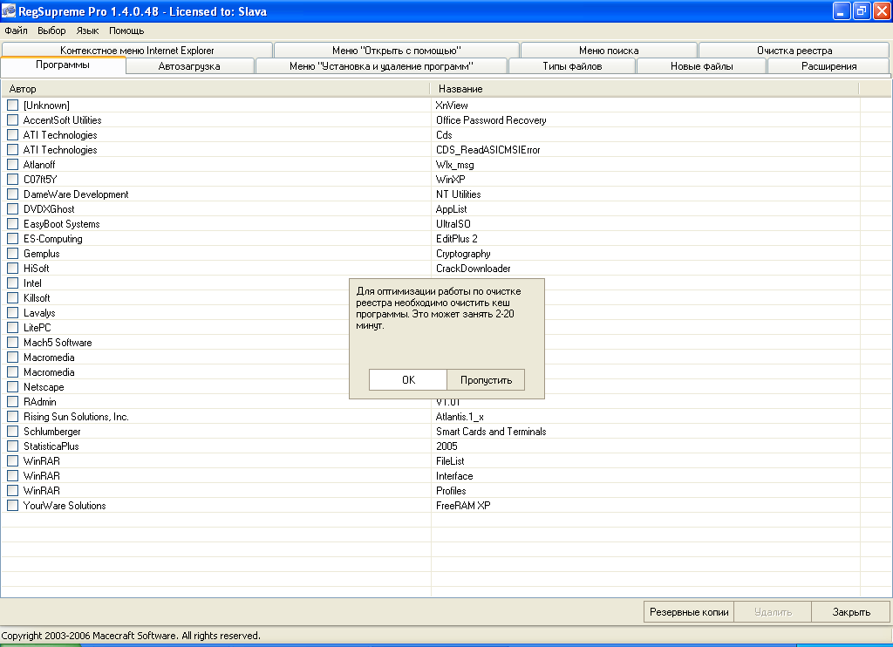
Рис. 5. 18.
Даже после установки ОС мы уже стандартно имеем около 40-80 неверных или не нужных(устаревших) ключей в реестре.
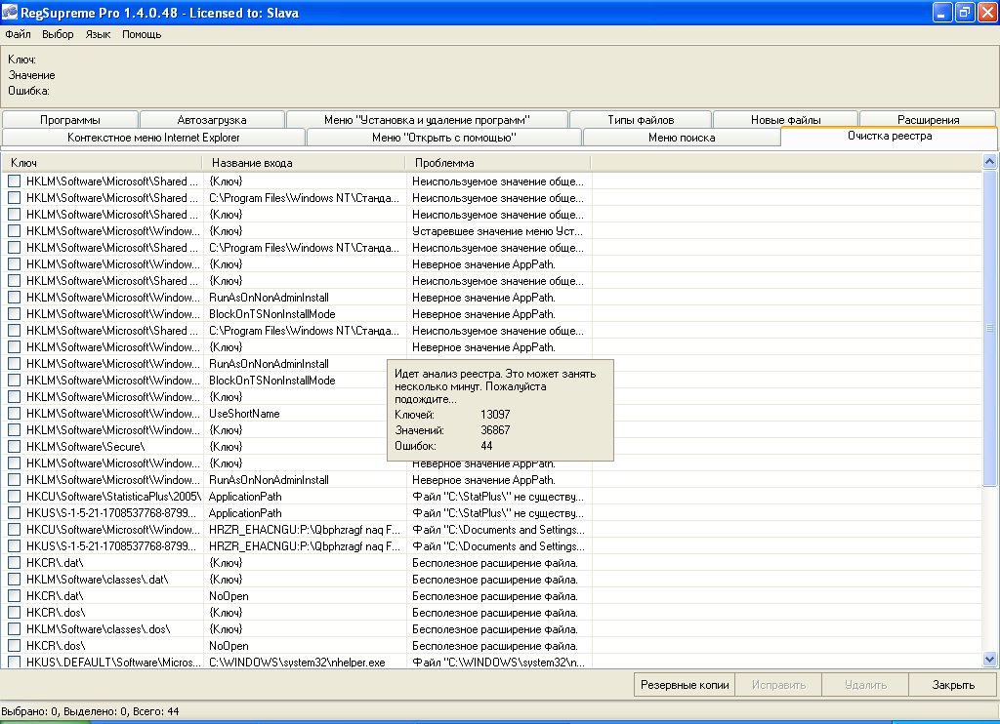
Рис. 5. 19.
При удалении этих элементов рекомендуется делать резервную копию.
Выполните проверку реестра и зафиксируйте результаты в отчете.
До этого момента мы оптимизировали только систему, но как всегда операционная система бесполезна без софта, далее мы попробуем объединить и подружить ОС с софтом который устанавливается на нее.
Одной из программ которая поможет «заточить» ваш компьютер под вас является программа Xp-Antispy.
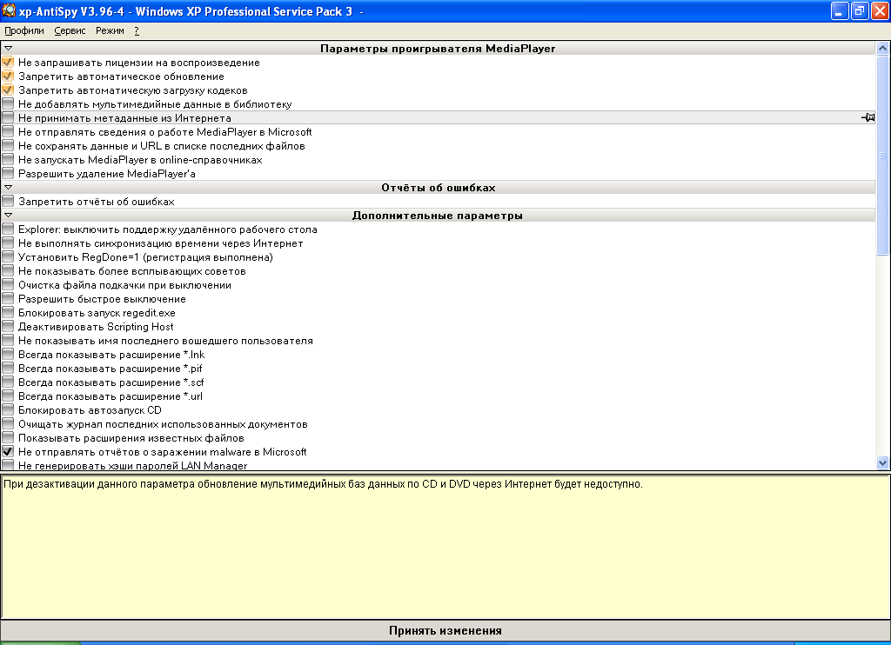
Рис. 5. 20. Так выглядит рабочее окно программы.
Оно может содержать до 40 пунктов меню, в зависимости от того что у вас установлено на компьютере. Она позволяет удалять такие вещи как встроенный брэндмауэр. Зачастую при установке своего брэндмауэра стандартный считает что это опасное ПО и просто не дает сделать этого.
Зафиксируйте результат выборки данной программы в отчете.
А это утилита которая может помочь программистам с надоедающим окном которое выскакивает в самый неподходящий момент. Окно “Run Time Debugger’a”. Дело в том что при установке серьезного софта, который сильно влияет на ОС, таких как обновление ОС, зачастую создается несоответствие и как следствие сбой в работе сервиса svchost.exe. Градации ошибок вызываемых в системе после установки обновления могут исчисляться сотнями. Для того чтобы исправить ситуацию необходимо использовать утилиту RegCure. Она устранит разногласия системы с реестром, файлами автозагрузки, выполняемыми и подключаемыми библиотеками, ассоциацией файлов к приложениям.
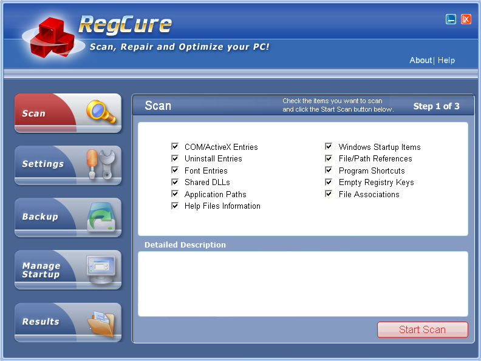
Рис. 5. 21. Окно программы в работе.
После выполнения сканирования вы сможете увидеть список ошибок, расположение элементов которые их вызывают. Оптимизацию ОС этой программой рекомендуется производить при критических установках софта. Либо откатах системы в более раннее состояние.
Зафиксируйте результат работы программы в отчет и проанализируйте полученный результат.
Таким образом без разгона процессора и поднятия вольтажа на элементах материнской платы можно добиться оптимизации и ускорения работы ОС в 10-25 процентов.
Выполните отчет в электронном виде. Сделайте вывод.
Контрольные вопросы
1. Какие системные папки можно удалять без последствий для ОС?
2. С помощью какой команды мы можем изменить размер системной папки с файлами восстановления?
3. Для чего необходима дефрагментация?
4. Как установить размер файла подкачки?
5. С помощью каких программ можно оптимизировать работу ОС?